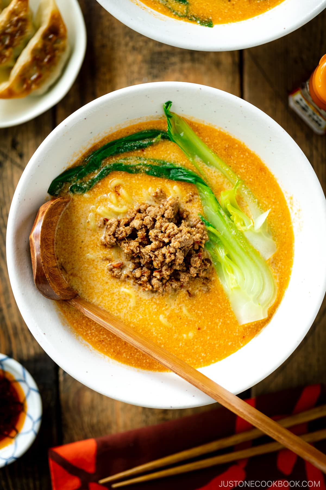

Tantanmen Recipes

Description
Tan Tan Ramen (Tantanmen) is a rich and flavorful Japanese ramen noodle soup adapted from the famous Chinese Sichuan dan dan mian. It’s unique for both its savory topping and the spicy yet creamy soup broth. This hot bowl of ramen is too good to be missed!
Ingredients
- Pork mixture: ground pork, ginger, garlic, sake, doubanjiang (spicy chili bean paste), soy sauce
- Sauce: Japanese sesame paste, miso, soy sauce, rice vinegar, la-yu (Japanese chili oil)
- Soup broth: chicken stock, unsweetened soy milk, salt
- Fresh ramen noodles
- leafy green: bok choy
Steps
- Make the sauce by combining the condiments.
- Cook the ground pork and condiments together to make the pork mixture.
- Make the soup broth by combining chicken broth and soy milk.
- Cook the leafy greens, followed by ramen noodles.
- Assemble the ramen bowl with the cooked noodles, hot soup, and pork mixture.